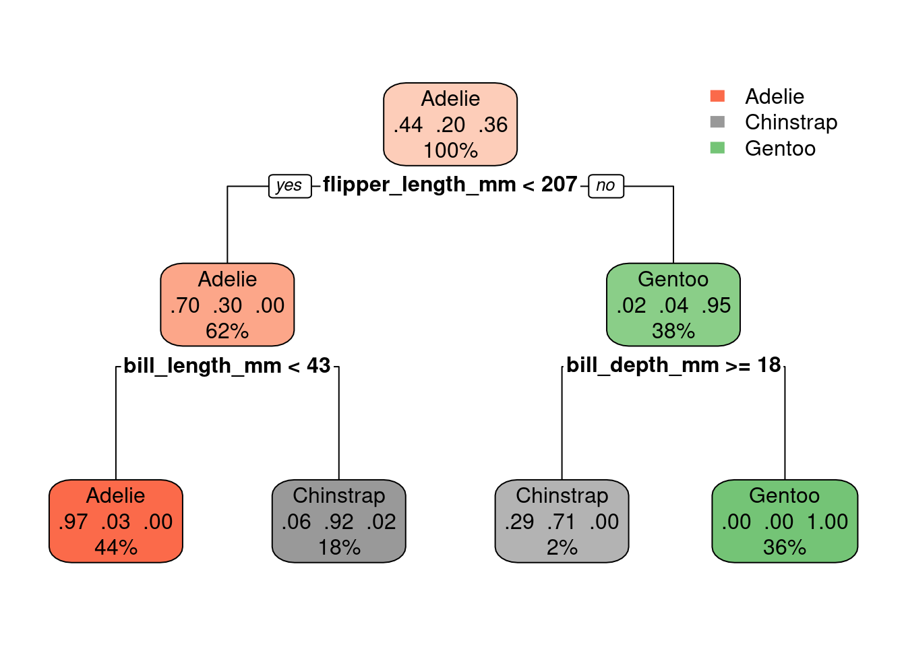
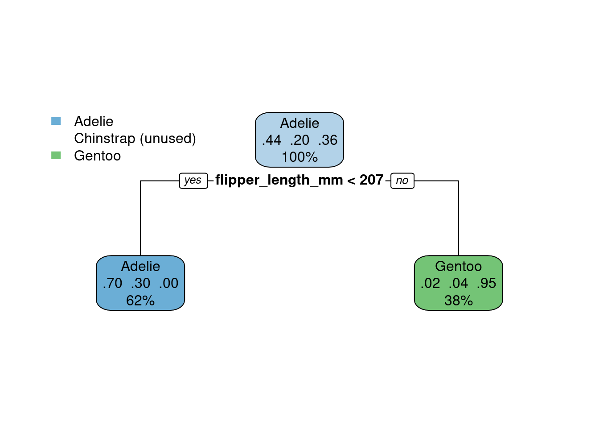

library('e1071')
library('ggsci')
library('ISLR2')
library('palmerpenguins')
library('parttree')
library('rpart')
library('rpart.plot')
library('tidyverse')✔️ Week 07 - Lab Solutions
DS202 - Data Science for Social Scientists
This lab session draws on 🗓️ Week 05 lecture content and on feedback given by the course representatives about the main struggles you are facing with R (tidyverse).
If you are already very familiar with tidyverse, you can skip to Step 2.
R packages you will need:
You might have already installed some of these packages. Some were used in 🗓️ Week 05 slides, others in previous labs. If you see an error like “package not found”, then install the package using install.packages("<package name>").
Installation instructions for parttree
The package parttree cannot be installed by install.packages. Instead, we have to follow the instructions set by the developers of the package:
install.packages("remotes")
remotes::install_github("grantmcdermott/parttree", force = TRUE)✔️ Take-home exercises (Solutions)
The following exercises were designed as natural extension of the concepts you learned about in this lab session. Reserve some time later to solve this at home, we will release solutions at the end of the week after everyone has had a chance to attend a lab session.
Q1: Selecting columns
Using the Bikeshare data set present in ISLR2 subset the data to only include mnth, holiday, and bikers columns.
Bikeshare %>% select(mnth, holiday, bikers) %>% head() mnth holiday bikers
1 Jan 0 16
2 Jan 0 40
3 Jan 0 32
4 Jan 0 13
5 Jan 0 1
6 Jan 0 1Q2: A new tidyverse verb
Using the Auto data set present in ISLR2, replicate Step 1.3, only this time replace filter(origin == 1) with group_by(origin). How have the results changed?
Auto %>%
as_tibble() %>%
select(mpg, origin) %>%
mutate(mpg_gt_gavg = if_else(mpg > mean(mpg), TRUE, FALSE)) %>%
group_by(origin) %>%
summarise(prop_mpg_gt_gavg = mean(mpg_gt_gavg))# A tibble: 3 × 2
origin prop_mpg_gt_gavg
<int> <dbl>
1 1 0.269
2 2 0.75
3 3 0.873A: Instead of looking just at the origin=1, we have now summarized the data and computed
prop_mpg_gt_gavg(Proportion of samples for whichmpgis greater than average) for each unique value oforigin.
Q3: Exploratory Data Analysis (Part I)
Calculate the average daily number of bikers in March, in the Bikeshare data set.
Bikeshare %>%
filter(mnth == "March") %>%
group_by(day) %>%
summarise(daily_bikers=n()) %>%
summarise(avg_daily_bikers=mean(daily_bikers))# A tibble: 1 × 1
avg_daily_bikers
<dbl>
1 23.5Q4: Exploratory Data Analysis (Part II0
Do people bike more during holiday seasons?
Bikeshare %>%
group_by(holiday, day) %>%
summarise(daily_bikers=n()) %>%
summarise(mean_daily_bikers=mean(daily_bikers),
std_daily_bikers=sd(daily_bikers))# A tibble: 2 × 3
holiday mean_daily_bikers std_daily_bikers
<dbl> <dbl> <dbl>
1 0 23.7 1.32
2 1 23.9 0.316Just by summarising the data, it’s not really possible to say. On average, the mean number of daily bikers seems to be about the same, just with a smaller standard deviation.
Q5: Back to penguins…
Let’s go back to the penguins data set. Create a new dataframe that omits missing values (NAs), remove the island and year columns but keep the rest of the dataset intact (don’t create new columns).
new_penguins <-
penguins %>%
select(-c(island, year))
new_penguins# A tibble: 344 × 6
species bill_length_mm bill_depth_mm flipper_length_mm body_mass_g sex
<fct> <dbl> <dbl> <int> <int> <fct>
1 Adelie 39.1 18.7 181 3750 male
2 Adelie 39.5 17.4 186 3800 female
3 Adelie 40.3 18 195 3250 female
4 Adelie NA NA NA NA <NA>
5 Adelie 36.7 19.3 193 3450 female
6 Adelie 39.3 20.6 190 3650 male
7 Adelie 38.9 17.8 181 3625 female
8 Adelie 39.2 19.6 195 4675 male
9 Adelie 34.1 18.1 193 3475 <NA>
10 Adelie 42 20.2 190 4250 <NA>
# … with 334 more rowsQ6. Predict Penguin species
Build a Decision Tree model to predict the species of penguins. Note that the outcome will not be a binary variable this time.
set.seed(1)
tree.model <- rpart(species ~ ., data = new_penguins, method = 'class')
rpart.plot(tree.model)
Note that we three different proportions in the middle of the nodes now (instead of just one). Each represent the proportion of penguins of a specific specie.
For example, the left-most leaf node shows: 0.97 0.03 0.00. That means: 97% of the samples that fall into that part of the decision tree are of the
Adeliespecies, 3% are of theChinstrapspecies and 0% are of theGentoospecies.How do we know the order of the species represented by these numbers? Check the levels of the column
species(which is a column of the typefactor). For more onfactorsread: https://r4ds.had.co.nz/factors.html
levels(new_penguins$species)[1] "Adelie" "Chinstrap" "Gentoo" The video below explains how to read the numbers inside the nodes of the decision tree
Q7. Control parameters
The decision tree algorithm we are using sets the cost complexity parameter (cp) by default as control = list(cp = 0.01). Build a new model with a smaller cp value, say control = list(cp = 0.001). Does this increase or reduce the complexity of the tree?
A smaller
cpparameter would force the decision tree to try to find a more complex model (more branches) if that leads to a better overall model. (If you want to understand how therpartmethod chooses to make the splits and branches of the tree, type?rpartin the console and read the section aboutmethod).
It turns out that nothing will make this model more complex! Even if you set a very lowcp, the tree stays the same:
set.seed(1)
tree.model <- rpart(species ~ ., data = new_penguins, method = 'class', control=list(cp=0.00000000000001))
rpart.plot(tree.model)On the other hand, it is possible to simplify the tree (fewer branches) if we increase
cpparameter:
set.seed(1)
tree.model <- rpart(species ~ ., data = new_penguins, method = 'class', control=list(cp=0.4))
rpart.plot(tree.model)
It all depends on what we care about and which metrics we will use to assess this model and we plan to use the model later on. But it looks like the above will underfit the data: one of the species is not even represented there.